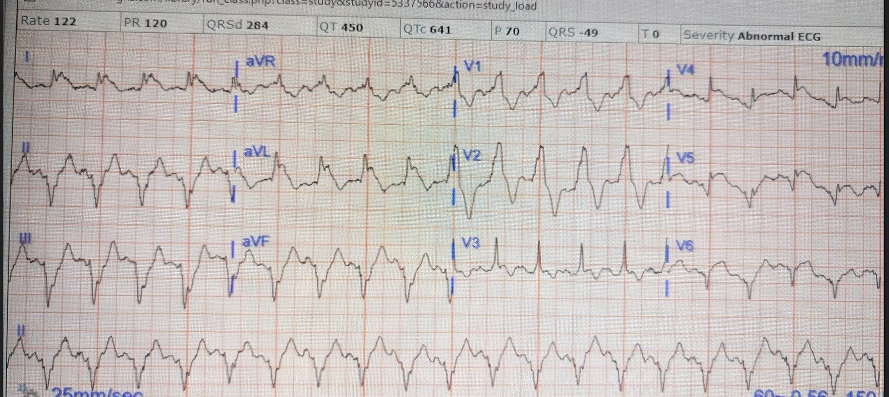
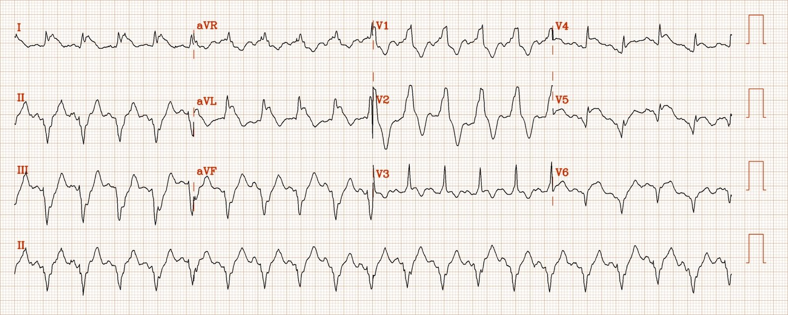
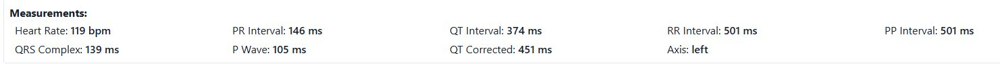
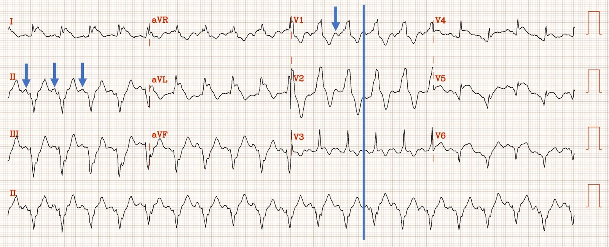
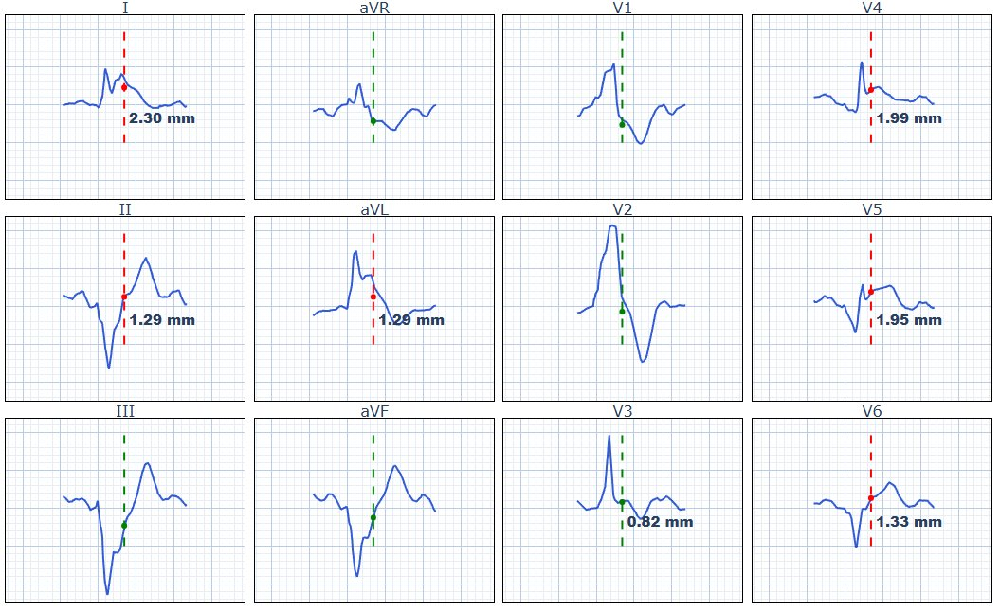
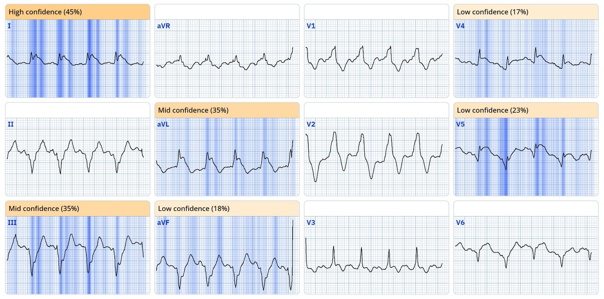
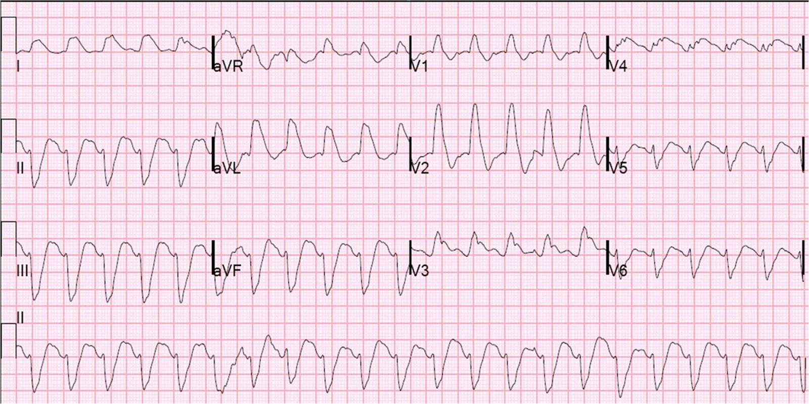
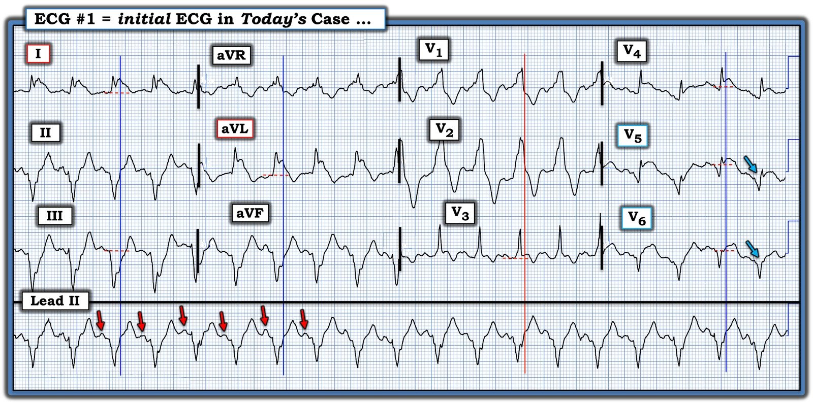

11/01/2025 — Một trong những điện tâm đồ bạn cần nhận ra ngay lập tức, mà người học có thể lúc đầu gặp khó khăn
Bản dịch tiếng Việt của bài "One of those ECGs you need to instantly recognize, which learners may struggle with at first" – Dr. Smith’s ECG Blog. Giữ nguyên toàn bộ 9 hình ảnh của bản gốc.
Tác giả: Pendell Meyers
Một người đàn ông trưởng thành nhập viện vì đau ngực cấp. Bệnh nhân trông nguy kịch. Ông đã được đặt stent LAD vài tuần trước (không rõ là đặt theo chương trình vì triệu chứng ổn định, hay để xử trí hội chứng vành cấp).
Đây là điện tâm đồ lúc phân loại (triage) của bệnh nhân:


Đây là phiên bản đã số hóa với chất lượng hình ảnh cao hơn:




Bệnh nhân được đưa gấp vào khu hồi sức vì “VT không ổn định”.
Đây là nhịp nhanh QRS rộng đều với tần số 120. Đây có phải là nhịp nhanh thất không?
Nếu tìm sóng P, ta thấy chúng hiện rõ:


Các mũi tên chỉ sóng P ở chuyển đạo II và V1. Đường kẻ cho thấy các sóng trông như sóng P ở chuyển đạo II và V1 tương ứng với nhau (xảy ra đồng thời).
Cũng cần lưu ý: ST chênh lên có dạng dốc xuống ở I, aVL và V2
Ca bệnh tiếp diễn
Một trong những bác sĩ nội trú cũ của tôi (người mà tôi đã dạy về hình ảnh này từ nhiều năm trước!) đã nhận ra điện tâm đồ này ngay lập tức và hiểu được ý nghĩa cũng như mức độ nghiêm trọng của nó.
Anh ấy gửi cho tôi mà không kèm thông tin gì, và dĩ nhiên tôi trả lời: “Chắc chắn là OMI do LAD, hình ảnh tồi tệ nhất có thể với RBBB và LAFB do thiếu máu cục bộ. Tử vong gần 100% nếu không tái tưới máu nhanh.”
Điện tâm đồ cho thấy nhịp nhanh xoang, RBBB+LAFB, và dấu hiệu thiếu máu cục bộ xuyên thành cấp vùng trước bên (nhiều khả năng nhất là do tắc cấp động mạch vành), với ST chênh lên (STE) đồng hướng ở I và aVL, STE không tương xứng ở V4-6 (dù bị hạn chế đôi chút do nhiễu chuyển động, vẫn chắc chắn). Dĩ nhiên có ST chênh xuống (STD) soi gương, đồng hướng ở các chuyển đạo dưới.
Như bạn thấy ở trên, trong phần mềm điện tâm đồ gốc được dùng trong thực hành thực tế, thời gian QRS bị đo sai nghiêm trọng thành 284 msec (tôi chưa bao giờ thấy thời gian QRS thực sự là 284 msec, bất cứ thứ gì làm QRS giãn rộng đều sẽ giết chết bệnh nhân từ lâu trước khi đạt tới 284 msec). Tôi e rằng nhiều người học cũng khó nhận ra QRS thực sự kết thúc ở đâu, và tôi e rằng một số người có thể nghĩ đây là nhịp nhanh thất do không phân biệt được QRS với đoạn ST. Bạn có thể thấy phần mềm PM Cardio của chúng tôi đo thời gian QRS chính xác hơn trong ca này, là 139 msec.
Ở đây chúng tôi đưa ra hình ảnh nhát bóp trung vị (median beat), với điểm J được đánh dấu bằng các đường chấm thẳng đứng, để cho thấy QRS thực sự kết thúc ở đâu. Phần mềm chưa hoàn hảo ở khâu này, nhưng nhìn chung tôi đồng ý với nó ở hầu hết các chuyển đạo ở đây:


Queen of Hearts dĩ nhiên nhận ra OMI với mức độ tin cậy tổng thể cực kỳ cao.
Đây là hình ảnh giải thích (explainability) của điện tâm đồ này:


Đáng tiếc là dù đã kích hoạt phòng thông tim ngay lập tức và điều trị nội khoa, bệnh nhân đã tử vong trên bàn thông tim trước khi kịp chụp mạch vành cấp cứu.
Nếu bạn không thể nhận ra điện tâm đồ này ngay lập tức và vượt qua các cạm bẫy của nó, bệnh nhân sẽ còn ít cơ hội hơn cả bệnh nhân này.
Hãy xem các ca khác của chúng tôi với hình ảnh tương tự, để khắc sâu điều này vào bộ nhớ của bạn:
Smith: Theo kinh nghiệm của tôi, các ca OMI do LAD kèm RBBB và LAFB này hoặc sắp ngừng tim, hoặc đã sau ngừng tim, và/hoặc đang sốc tim. ST chênh lên KHÔNG điển hình. Nó thường có dạng dốc xuống
Ca này cũng là một nhịp nhanh QRS rộng. Phòng thông tim đã được kích hoạt nhưng bác sĩ can thiệp đã từ chối, nói rằng đó là “nhịp nhanh thất.” Bệnh nhân tử vong do sốc tim 8 giờ sau đó:
Wide Complex Tachycardia; It’s really sinus, RBBB + LAFB, and massive ST elevation (Nhịp nhanh QRS rộng; thực ra là nhịp xoang, RBBB + LAFB, và ST chênh lên rất nhiều)


Hãy xem ST chênh lên ở I, aVL và V2: tất cả đều dốc xuống và hoàn toàn không điển hình như ở các ca không có RBBB và LAFB. Những ca này thường RẤT khó nhận ra.
Đau ngực cấp, blốc nhánh phải, không đạt tiêu chuẩn STEMI, và troponin ban đầu âm tính.
Một phụ nữ cao tuổi bị nôn cấp, tiền ngất, tụt huyết áp, và phức bộ QRS rộng
Một người đàn ông ở độ tuổi 40 thực sự cần bạn hiểu điện tâm đồ của anh ấy
Ngừng tim ở sân bay, với một điện tâm đồ dễ nhưng quan trọng mà ai cũng cần nhận ra
Một phụ nữ ở độ tuổi 60 với 6 giờ đau ngực, khó thở, nhịp tim nhanh và giảm oxy máu
Rung thất, ROSC sau khi tưới máu được phục hồi bằng ECMO, rồi đến điện tâm đồ. Phác đồ có thể được gạt sang bên bởi phán đoán của bác sĩ.
Chẩn đoán là gì ở bệnh nhân ngoài 70 tuổi bị đau ngực này?
68 minutes with chest compressions, full recovery. Plus recommendations from a 5-member panel on cardiac arrest. (68 phút ép ngực, hồi phục hoàn toàn. Kèm khuyến nghị từ một hội đồng 5 thành viên về ngừng tim.)
hãy xem ST chênh lên dốc xuống ở ca này
Một trận nhậu chết người: người đàn ông ở độ tuổi 30 bị đau ngực và troponin I độ nhạy cao ban đầu trong giới hạn bình thường
Được hồi sức sau rung thất: chẩn đoán điện tâm đồ là gì?
hãy xem ST chênh lên dốc xuống ở ca này
Một người đàn ông ở độ tuổi 80 bị đau ngực
Ngoài STEMI vùng trước diện rộng, điều gì khác ở điện tâm đồ này là điềm rất xấu?
Đau ngực và blốc nhánh phải

===================================
BÌNH LUẬN CỦA TÔI, bởi KEN GRAUER, MD (11/1/2025):
===================================
Như Dr. Meyers đã nêu — điện tâm đồ ban đầu hôm nay là một hình ảnh “Phải Nhận Ra!” vì: i) Hình ảnh điện tâm đồ này vẫn bị đọc sai quá thường xuyên (bằng chứng là chẩn đoán sai trong ca hôm nay thành “VT không ổn định” ) ; — và, ii) Bệnh nhân có thể tử vong nếu hình ảnh này không được nhận ra ngay lập tức (bằng chứng là cái chết của bệnh nhân hôm nay dù đã được nhận ra kịp thời với việc kích hoạt sớm phòng thông tim).
Với tôi — những MẤU CHỐT giúp tôi biết rằng điện tâm đồ ban đầu hôm nay không phải là VT gồm:
- Rằng bất chấp mọi “nhiễu” và nhiễu do chuyển động đường nền — sóng P xoang có hiện diện! Dù khó thấy ở nhiều chuyển đạo — vẫn thấy nhất quán sóng P dương rõ ràng ở chuyển đạo II với khoảng PR hằng định cho từng nhát trong dải nhịp chuyển đạo II dài (các mũi tên ĐỎ trong Hình 1).
- Rằng lý do chính đến khám của bệnh nhân hôm nay là CP cấp (đau ngực – Chest Pain) — với tiền sử đã biết bệnh mạch vành và đặt stent LAD vài tuần trước đó. Tuy dĩ nhiên bệnh nhân VT bền bỉ vẫn có thể đến khám vì CP cấp — hãy nghĩ tới OMI cấp với bệnh cảnh lâm sàng này.
- Rằng (như Dr. Meyers đã nêu) — sự kết hợp của: i) nhịp nhanh xoang rõ rệt (tần số ~120/phút) ở một bệnh nhân nguy kịch bị CP cấp; ii) RBBB/LAHB; — và, iii) ST chênh lên ở nhiều chuyển đạo (kèm ST chênh xuống ở các chuyển đạo dưới) tạo nên hình ảnh “Phải Nhận Ra” của tắc cấp LAD đoạn gần + sốc tim cho đến khi chứng minh được điều ngược lại.
Có lẽ khía cạnh thách thức nhất của điện tâm đồ ban đầu hôm nay — là xác định điểm J, mốc phân tách điểm kết thúc của phức bộ QRS với điểm khởi đầu của đoạn ST (vì mốc này là dấu chỉ để xác định có hay không và mức độ ST chênh lên và chênh xuống). Kỹ thuật chúng tôi ưa dùng giống với kỹ thuật dùng khi có hình thái ST “vây cá mập” (shark fin) (Xem Bình luận của tôi trong bài đăng ngày 19 tháng Năm năm 2020 trên Dr. Smith’s ECG Blog).
- Xin trích lời Dr. Meyers & Dr. Smith — “Khi QRS rộng, điểm J sẽ ẩn. Vì vậy, bước tiếp theo của bạn là Dò nó xuống và Chép nó sang”.
- Trong Hình 1 — đường thẳng đứng màu ĐỎ chạy qua các chuyển đạo V1,V2,V3 ghi đồng thời cho thấy điểm khởi đầu của tôi — vì các chuyển đạo DỄ NHẤT để xác định điểm kết thúc của phức bộ QRS trên bản ghi này là chuyển đạo V1,V2.
- Kéo tiếp đường thẳng đứng màu ĐỎ này xuống qua dải nhịp chuyển đạo dài ghi đồng thời sẽ cho thấy điểm ở chuyển đạo II nơi kết thúc của QRS nằm.
- “Chép sang” điểm này ở chuyển đạo II (điểm xác định kết thúc QRS) — cho phép chúng ta kéo lên trên các đường thẳng đứng màu XANH ở mỗi nhóm trong 3 nhóm chuyển đạo ghi đồng thời còn lại. Đoạn ST bắt đầu ở bên phải các đường thẳng đứng màu XANH này ở từng chuyển đạo trong 9 chuyển đạo còn lại.


Cách tiếp cận tuần tự của tôi với điện tâm đồ #1:
Trình tự tôi đi qua chỉ trong vài giây khi lần đầu nhìn thấy bản ghi ở Hình 1 là:
- — Thứ 1 — nhận ra nhịp là nhịp nhanh xoang (dễ nhất là nhìn từng nhát tìm sóng P trên dải nhịp chuyển đạo dài).
- — Thứ 2 — nhận ra QRS giãn rộng rõ ràng (dễ nhất là nhìn QRS ở chuyển đạo V1,V2) — và thấy blốc hai phân nhánh = RBBB/LAHB (xác định bởi QRS rộng, dương hoàn toàn ở chuyển đạo V1 — và QRS gần như âm hoàn toàn ở từng chuyển đạo dưới).
- — Thứ 3 — thấy ST chênh lên chắc chắn ở chuyển đạo I, cũng như ở chuyển đạo bên cao còn lại ( = chuyển đạo aVL). Tinh tế hơn là ST chênh xuống soi gương ở các chuyển đạo dưới — nhưng một khi đã nhận ra điều đó, OMI cấp được khẳng định. Khi thấy mức độ ST chênh lên ở chuyển đạo I — tôi đã nghĩ, “Không đời nào đây lại không phải là một STEMI diện rộng đang diễn ra.”
- — Thứ 4 — nhận ra ST chênh lên chắc chắn ở các chuyển đạo trước tim bên V4,V5,V6 (và theo đó — ST bắt đầu chênh lên cả ở chuyển đạo V3).
- — Thứ 5 — nghĩ rằng sóng T đảo ngược sắc nhọn ở chuyển đạo V2 sâu hơn một cách không tương xứng so với mức tôi dự đoán từ RBBB đơn thuần (do đó là do thiếu máu cục bộ).
- — Thứ 6 — ấn tượng với phức bộ QS ở chuyển đạo V6 — và sóng Q rất rộng và sâu ở chuyển đạo V5 (các mũi tên XANH trong Hình 1).
- — Thứ 7 — thấy T-QRS-D ở chuyển đạo V4 (để biết thêm về biến dạng phần cuối QRS (Terminal-QRS–Distortion) — Xem Bình luận của tôi trong bài đăng ngày 14 tháng Mười Một năm 2019 và bài đăng ngày 18 tháng Hai năm 2022).
Kết luận: Như Dr. Meyers đã nêu — “Chắc chắn là OMI do LAD đoạn gần với ‘hình ảnh tồi tệ nhất có thể’, biểu hiện RBBB/LAHB”.
- Ngoài blốc hai phân nhánh — các chỉ dấu tiên lượng xấu khác trong ca hôm nay gồm: i) Nhịp nhanh xoang rõ rệt; ii) ST chênh lên lan tỏa kèm ST chênh xuống soi gương ở các chuyển đạo dưới; — và, iii) Mất các lực điện ở chuyển đạo trước tim bên (đặc biệt là Qr ở chuyển đạo V5 và QS ở chuyển đạo V6) — cũng như các phức bộ QRS ở chuyển đạo dưới gần như âm hoàn toàn — những dấu hiệu này gợi ý đã hoại tử lan rộng với nguy cơ sốc tim sắp xảy ra.